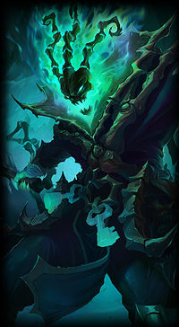

Thresh "Der Kettenwächter"
Informationen über Thresh
Thresh der Seelen Sammler ist ein schwer zu erlerender Champion, weil sein kid sehr viel Möglichkeiten gibt, aber wenn man ihn beherrscht offenbaren sich viele Möglichkeiten. Seine Fähigkeiten machen ihn zu einen der besten "Piller" in League of Legends. Er kann Gegner über lange Distanzen "hucken" , also sie mit seiner Sense fangen und kurzzeitig kampfunfähig machen. Außerdem kann er Gegner wegschubsen oder heranziehen und eine Laterne werfen an der sich Verbündete festhalten können um sich zur Position von Thresh zu ziehen, außerdem gibt diese ein Schild an alle Verbündeten die sich in der Nähe befinden. Seine Ultimative Fähigkeit erschafft ein Fünfeck, deren Wände, wenn sie berührt werden, den Gegner verlangsamen und magischen Schaden anrichten.
Was macht Thresh so stark?
Wichtige Items auf Thresh
-
Mikael's Crucible
-
Locket of the Iron Solari
-
Sightstone
-
Face of the Mountain
-
Sunfire Cape
-
Boots of Mobility